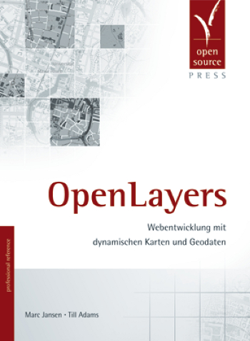

WebGIS with vector data using OpenLayers & GeoExt
Marc Jansen, terrestris
<jansen@terrestris.de>
Content
Introduction
OpenLayers
GeoExt
Outlook
Introduction
About me
developer @terrestris
mainly JavaScript (recently also Java)
book author
core developer of OpenLayers
one of the kickstarters of GeoExt 2

About terrestris
based in Bonn, Germany
top-notch WebGIS
standards enthusiasts
OpenSource / Free software
development, training, consulting
About the talk
OpenLayers is huge
so is GeoExt
highlights
of both libraries
... all in relation to vector data
a hell of a ride
OpenLayers
Overview
a very popular JavaScript library for web-maps
OpenSource (BSD), © OSGeo
long history (dating back to 2006)
used in lots of important projects
understands lots of formats
provides a common API
OpenLayers and vector data
fetching
displaying
styling
modifying
persisting
fetching & reading vector data
OpenLayers.Protocol
WFS, HTTP, …
OpenLayers.Format
GML, KML, GeoJson, …
displaying vector data
SVG
Canvas
VML
normalized interaction
styling vector data
cross-renderer
feature-attribute based
context based
render-intend based
modifying vector data
editing controls (CUD)
snapping / splitting
clustering
simplification
persisting vector data
persisting via WFS-T
other outputformats
Switzerland
• verticies
→
• length
→
performance
renderer dependant
basically sufficient / satisfying
room for improvement
GeoExt
Overview
rich web mapping interfaces
extends Ext JS with spatial components
OpenSource (BSD, exception from Sencha), © OSGeo
GeoExt and vector data
data components
form components
UI enhancements
GeoExt data components
proxy for OpenLayers.Protocol objects
readers for e.g. features / attributes
models for e.g. (discovery)
stores that combine the aforementioned
GeoExt form components
can combine a proxy
(with OpenLayer.Protocol)
with an OpenLayers.Filter
generated from a standard form
e.g. for querying a WFS
GeoExt UI enhancements
VectorRenderer
OpenLayers.Style to Ext.Component
used e.g. in legends
or in feature grids
interactive print selection
highlighting features (grid ⇔ map)
Outlook
OpenLayers 3
WebGL
performance
file size
better API-docs
GeoExt 2
not too far from final
chart interactions
GeoExt next: OpenLayers 3 ?
Thank you
Questions?
Imprint
Author
Marc Jansen
jansen@terrestris.de
(twitter) @selectoid
(github) @marcjansen
License
These slides are
CC BY-SA
.
←
→
/
Go to slide:
#